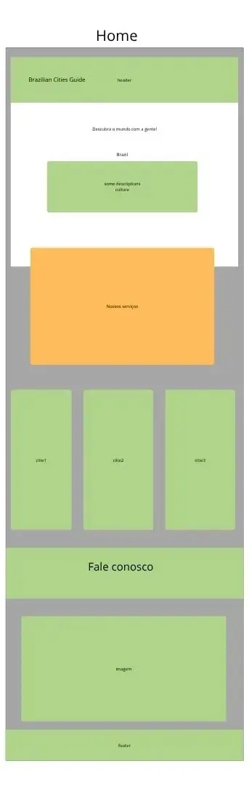

Site Name
Brazilian Cities Guide
This name represents a guide about cities in Brazil.
Possible domain: braziliancities-guide.org
Site Purpose
This site offer a guide about 3 cities in Brazil with information of the culture, galleries and an intinerary to choose a travel destiny.
Scenarios
- Best landscape to visit
- Where can I find information about the guides?
Color Schema
- Green #256024; - for heading and highlights
- White #f6f7f6; - page background
Typografy
- "DM Serif Text", serif; - for headings
- "Funnel Sans", sans-serif; - for body text
Wireframe
Mobile Wireframe
Desktop View
